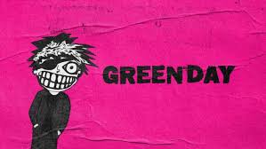
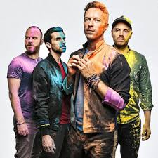

Musicos favoritos
Esta página presenta una selección de mis bandas y artistas favoritos, con una breve descripción de cada uno y su álbum más representativo.
Green Day

Green Day es una banda estadounidense de punk rock formada en 1987 en California. Se hicieron famosos a mediados de los 90 con su álbum Dookie, que impulsó el resurgimiento del punk rock en la corriente principal. La banda está liderada por Billie Joe Armstrong y es conocida por sus letras sociales y energéticas.
Álbum más representativo: Dookie (1994)
Coldplay

Coldplay es una banda británica de rock alternativo formada en Londres en 1996. Conocidos por su sonido melódico y emocional, lograron fama mundial con su álbum debut Parachutes. Chris Martin es el vocalista principal y el grupo ha evolucionado hacia un estilo más pop y electrónico a lo largo de los años.
Álbum más representativo: Parachutes (2000)
La Oreja de Van Gogh

La Oreja de Van Gogh es una banda española de pop rock formada en San Sebastián en 1996. Su estilo combina letras románticas y melodías pegajosas. Alcanzaron gran éxito en el mundo hispanohablante con álbumes cargados de emotividad y frescura.
Álbum más representativo: El viaje de Copperpot (2000)
Andrés Cepeda
Andrés Cepeda es un cantante y compositor colombiano de pop y balada romántica, con influencia de jazz y bolero. Inició su carrera en los 90 y es reconocido por su voz cálida y letras profundas. Ha sido una figura importante en la música latina contemporánea.
Álbum más representativo: Para amarte mejor (2005)
Sebastián Yatra
Sebastián Yatra es un cantante y compositor colombiano de música pop y reguetón, nacido en 1994. Su estilo mezcla baladas románticas con ritmos urbanos. Se ha convertido en una de las estrellas emergentes más importantes de la música latina desde su debut.
Álbum más representativo: Mantra (2018)
Recomendacion personal: Escuchar 21 guns de greenday, es un clasico!!
Datos interesantes: "Basket Case" es una canción muy significativa y está entre las 150 mejores de la historia según la revista Rolling Stone